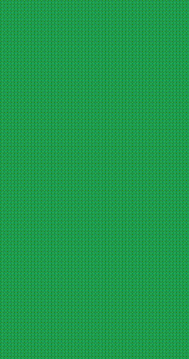

BACKGROUND
Saladify is a mobile app targeted towards salad lovers, and other health conscious individuals seeking to discover new salad recipes and figure out what kind of salads they can make with ingredients they have at home.
Saladify came to fruition from my final application project for CS 160 (User Interface Design + Development).
I learned a great deal from this project after familiarizing myself with design processes like wireframing, storyboarding, and conducting cognitive walkthroughs. Moreover, I was able to solidify my prototyping skills using Figma and web development skills with Javascript and HTML/CSS.
STORYBOARDING
An important step of the designing process that I learned from CS160 was the use of storyboarding, which helped me visualize an actual user’s experience with my application, and would later help me in the sketching phase with solidifying the flow of the user’s interaction with Saladify.
SKETCHES + WIREFRAMES
After finalizing my idea, I created some sketches to demonstrate a mockup of our app’s interface and to highlight some of the key features of Saladify, including the ability to browse for salads, track its ingredients, and to also view similar salads (recipes for other salads with similar ingredients with your selected recipe).
Next, I constructed some wireframes for Saladify’s interactions in order to move to a higher level of detail and visualize the flow of the application from screen to screen.
PROTOTYPING
My favorite part of the design process, bringing our design to a higher fidelity with increased interactivity by prototyping using Figma. From here, I finally decided on a minimalistic, green color scheme that would reflect Saladify’s healthy, “green” identity.
Lo-fi prototype
Hi-fi prototype
FINAL DESIGN + IMPLEMENTATION
Lastly, it was time to implement my final design into a properly functional product, using HTML, CSS, and Javascript.
Part I - Browsing and Viewing Recipe

1.
Home page
See saved recipes or go to browse
2.
Browse salads
Scroll through recommended recipes,
or view filter options in top right
3.
Filter salads
Filter out search results based on dietary restrictions
4.
View recipe's ingredients
Once recipe is selected, view checklist of
ingredients and checkmark ones already at home
Part II - Build Recipe or Find New Suggestions
5.
Shop for ingredients
Find grocery options for buying remaining ingreds, or swap ingredient with suggested substitute
6.
Replace ingredients
Replace ingredient with suggested substitute based on flavor
7.
View recipe ingredients
After replacing ingredients, return to recipe with updated ingredient list
8.
View recipe instructions
Scroll through recipe instructions step by step


{kind=link}
{kind=link}
{kind=link}
{kind=link}